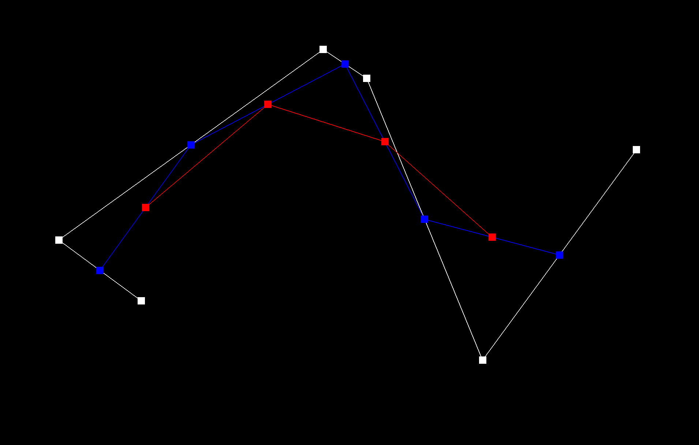
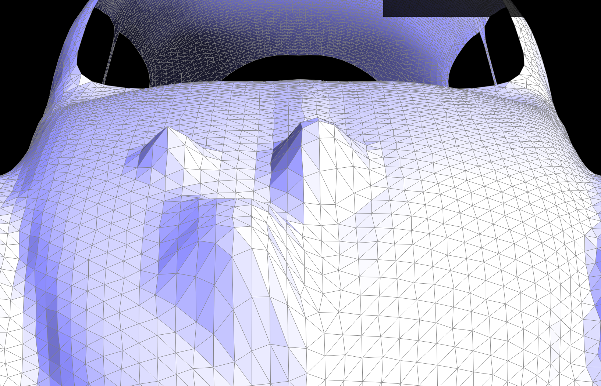

GilgaMesh is a mesh editor that supports various mesh operations and some support for bezier curves and
surfaces. The name is just a pun, there are no kings of Uruk here (yet). As a bezier editor, It is able to draw
bezier curves at each interpolation step and move around each point to see how it affects the whole, as well as
turn bezier surfaces into a triangle mesh. As a mesh editor, it is able to flip and split triangles, smooth
shade models using Phong shading, and perform Loop subdivision on models.
3D modeling has always been interesting as a concept to me but I've never done it myself as it seemed like a
kind of mystical art. It still remains that way in a sense, but this project has demystified the process a
little by showing what tools are at modelers' disposal.
Section I: Bezier Curves and Surfaces
Part 1: Bezier curves with 1D de Casteljau subdivision
De Casteljau's algorithm is a way to define a nth-degree bezier curve in terms of a parametric function over \(0
\leq t \leq 1\). The curve is described as a recursive linear interpolation between points, where interpolating
between the first and second point with parameter \(t\) provides the first point for the next pass, the
interpolation of the second and third points provides the second point, etc. This is done until there is only
one point left, which becomes the point on the curve at \(t\).
In effect, we take the point \((1-t)\) of the way along each edge connecting adjacent points, starting from the
lower indexed point to the higher indexed point. We then connect each of those new points and do the same thing,
taking the point between successive points \((1-t)\) along the edge, until there are no more edges.
To implement de Casteljau's algorithm, I created a function that performed one step of the process; namely, took
in \(n+1\) points, interpolated along the edges, and returned a list of the \(n\) resulting points. Evaluating
the full bezier curve was then just a matter of calling the function recursively until only one point remained
and there were no more edges to interpolate.
Below is a table displaying de Casteljau's algorithm for a 5th degree bezier curve with 6 control points at each
step of interpolation, with the newest edges and points in red. Typically bezier curves for graphics tend to be
cubic beziers strung together, but the
same algorithm works for any number of points greater than two. Notice how the number of points and edges
decreases by one at each step. The final image shows the final curve, which is the parametric function defined
by de Casteljau's from \(0 \leq t \leq 1\).
Step 0, 6 points, 5 edges
Step 1, 5 points, 4 edges

Step 2, 4 points, 3 edges
Step 3, 3 points, 2 edges
Step 4, 2 points, 1 edge
Step 5, 1 point
The final point \(t=0.5\) on the curve
The full final curve, \(0 \leq t \leq 1\)
Additionally, here is an animated version of the last step of a different curve at various t values.
Part 2: Bezier surfaces with separable 1D de Casteljau
Teapot generated from bezier surface. Triangles were generated from sampling the bezier
surface.
Bezier surfaces in 3D are defined by \(n \times n\) 3D points, with interpolation over two parameters, \(u\) and
\(v\), ranging between zero and one. Extending de Casteljau's algorithm to surfaces is simply a matter of
evaluating the same algorithm as a curve at \(t = u\) on each row. This gives us one point per row, giving a
total of \(n\) points. We can then feed the \(n\) resulting points into de Casteljau's algorithm for a curve
again, with \(t = v\), giving us a single point. In total, letting \(0 \leq u, v \leq 1\) defines the parametric
surface of the bezier surface.
Implementing 3D bezier surfaces requires almost no modification from the 2D algorithm except using 3D points to
interpolate between, running the original algorithm \(n\) times along the rows with \(t = u\), and running the
original algorithm one more time on the output of the \(n\) rows with \(t = v\).
Section II: Triangle Meshes and Half-Edge Data Structure
Part 3: Area-weighted vertex normals
Half-edge meshes allow for efficient calculation of area weighted vertex normals. To calculate them for a
vertex, one must find all faces the vertex is a part of, find their normal, and weight that normal by the area
of the face it is a part of. The weighted average of the normal of all surrounding faces should be normal of the
vertex. Finding this normal allows for lighting calculations to be done per vertex in Gourard shading, which can
then be interpolated using barycentric coordinates, or interpolating the normals themselves and performing the
lighting calculations per fragment as in Phong shading.
Flat shaded teapot. Very clear edges to faces. Phong shaded teapot. Face edges aren't as visible. Corners tend to be lighted weirdly.
I assumed all faces were triangles as per the problem statement, so I had assurances that after three successive
half-edges I would end up at the original half edge and would have traversed all half-edges of the face. Thus,
starting at the half-edge stored by the vertex itself that points away from the vertex, I iterated through all
three half-edges of the triangle and stored their associated source vertexes. Then, I took the cross product the
vectors pointing from the first point to the second and third respectively, which serves as a normal scaled by
the face's area*, and added it to an accumulated vector. Finally, I took the third edge's twin and set that as
the start of the next face to iterate through. This works because the third edge points back to the original
vertex, so it's twin must originate from that vertex, meaning the twin's face must be a face that surrounds the
vertex. Using this, we enforce the invariant that the first half-edge we look at per face is the one facing away
from the original vertex. This allows for an easy check on when to end the process– there is only one half-edge
per face that points away from a particular vertex, and we maintain that the third edge's twin always points
away from the original vertex, so if the twin is the same as our starting half-edge then we must have started at
that face. Once we have the accumulated vector, we can normalize it and use it as a vertex normal.
This leaves two questions unanswered: why does the cross product serve as a normal scaled by area*? And what
about boundaries? The latter is quite simple; if we hit a boundary while traversing the triangles around the
vertex counter-clockwise, then there must be a boundary right of the original half-edge we started at because
the mesh is a manifold. Thus we can continue traversing clockwise from the original triangle until we hit an
edge, in which case we have hit both edges of the fan that emanates from the original vertex. There cannot be
any other triangles around the point, again because the mesh is a manifold, so we can stop.
The cross product being a normal scaled by area* comes from the fact that the cross product is perpendicular to
both vectors, and its magnitude is the area of the parallelogram that is made by the two vectors. If we divide
the magnitude/area by two, we get half the area of the parallelogram, i.e. the area of the triangle. We also
know the direction is normal to the surface, and because the triangles are always oriented counterclockwise we
can calculate which direction the normal should go easily. If we accumulate all of the cross products, we will
get the weighted normals scaled by the area of the triangle times two; however, because we eventually are going
to normalize the accumulated cross products and the two is a constant factor, we don't have to divide it out
because the final normalization will do so anyways.
Part 4: Edge flip
In theory, edge flips are simple. We just need to move a diagonal separating a quadrilateral to the other
diagonal. With half-edges, we need to shuffle some pointers. How hard could it be? So I thought I could logic it
out. So despite the warnings I
decided to try and think through all the pointer reassignments. That went predictably bad, with faces
disappearing left and right and segfaults galore. After trying to debug it a few times and figuring out there
were both pointers to itself and pointer loops of length five, I finally heeded the warning and reassigned all
of the pointers, even if they theoretically shouldn't have changed. Turns out I forgot to assign two of the six
"next" pointers in my original implementation… Then, I was able to cull the unnecessary pointer reassignments
using many, many drawings of triangles, checking along the way to make sure flipping still worked.
I was spending a lot of time initially trying to make sure I wasn't accessing modified pointers instead of the
original, so to make my life easier I made copies of the originals at the very top of the function. This helped
immensely with implementation but also with readability, as the code wasn't a jumble of
self->next()->next()->vertex()->halfedge()->face() = twin->next()->face()->next()->next()->face();
(exaggerating of course, but…).
No flipping
Some flipping
Too much flipping
Comparison of the original pot mesh, the pot mesh after some flips, and the pot mesh after
legal but malicious flips that result in a very different geometry
Part 5: Edge split
Splitting edges has many pointer reassignments like flip edge, but also creates new half-edges, edges, vertexes,
and faces. For my own sanity, I segmented the code to set all of the pointers for each object all at the same
time, for example assigning all the half-edge "next" pointers in one go. Drawing out the triangles then made it
easy to see which edges should point to what, which objects needed to be created, etc. Implementing per
functionality versus object helped me mentally focus on one task rather than having to context switch between
each object. Partially because of this, my code worked first try, which was definitely a welcome surprise.
I also implemented support for splitting boundary edges as extra credit. To split boundary edges, you only split
one side of the triangle. I renamed all the variables associated with one side of the triangle by adding a big
obnoxious suffix, and from there it was easy to isolate the parts associated with that side into a
if (!isBoundary) block. The refactoring was almost mechanical and after placing all the suffixed
pointer assignments into the conditional, minimal changes had to be made to make boundary edge splits work.
Original headlight mesh
Split headlight mesh
Original hood mesh
Hood mesh after flips
Hood mesh after flips and splits
Window mesh after boundary splits
Part 6: Loop subdivision for mesh upsampling
Loop subdivision is a two step process used to subdivide a mesh, where you split each triangle into four, then
adjust vertex positions based on the adjacent vertices. It makes a little more sense to flip those steps in
practice by computing the new positions first, then subdividing each triangle, and finally moving the vertexes
into their precomputed new position.
The updated position of a vertex depends on if it was in the original mesh or not. I first computed the original
vertexes by traversing through each of the surrounding vertices (see part 3), then finding
the new position \(p_n\) from a weighted average of the old position \(p_o\) and the \(n\) surrounding vertices'
positions \(p_i\):
\[
p_n = (1 - n \cdot u) \cdot p_o + \sum^{n}_{i=1} u \cdot p_i \\
n = \text{valence} = \text{# of old vertexes around} \\
u =
\begin{cases}
\frac{3}{16} & \text{if } n = 3 \\
\frac{3}{8n} & \text{otherwise} \\
\end{cases}
\]
For each edge, we then need a new vertex to serve as endpoints for the internal subdivision edges. The new
position is defined as a weighted average of \(\frac{3}{8}^{\text{th}}\) for each terminator of the edge it is
on and \(\frac{1}{8}^{\text{th}}\) the opposite two sides (all vertexes of which can be accessed through
traversing the half-edge associated with the edge or half-edge's twin). At this point in the implementation, I
checked that all my calculations made sense by modifying the positions without subdivision, which helped me
catch some bugs. After computing and storing these positions, we can proceed to actually modifying mesh
topology.
Each triangle now needs to be split into four smaller triangles. We can do this by splitting each edge in the
original mesh once. Figuring out when an edge was in the original mesh was tricky and caused many bugs, but I
settled on marking vertices as "new" as they were added by the process and making sure neither side of the edge
was marked as such.
Splitting the mesh was already implemented in part 5, so the complexity came from marking
edges as new, which was required for the next step. Note that a new edge is NOT simply an edge object
that was not in the original mesh, since true edges in the original mesh get split into two different edge
objects that were not part of the original mesh but do not need to be split again. Rather, a new edge is one
that does not correspond to (half of) an edge in the original mesh. Since the edge splitting algorithm
implementation takes the original half-edge associated with the edge and its twin and puts them on two different
edges running parallel to the initial edge, I stored both before the split and cross referenced the edge they
end up at with all four edges the edge splitting algorithm creates. If the edge was the same as one of the edges
parallel to the original edge, I didn't mark it as new, and vice versa.
To ensure regularity in splitting, we now need to flip all new edges that go from a new vertex to an old vertex.
By marking the edges as new or not, this becomes trivial; just do a check on the vertices of all new edges, flip
as needed, and mark them as no longer new for the next pass. Debugging this, however, took a long time. I had to
edit the mesh feature detail panel to add data on the "newness" of an edge before I realized that iterating over
the original mesh and iterating over the "not new edges" wasn't the same thing, since two "not new edges" were
added every time a original mesh edge was split, meaning lots of spinning wheels of death while it tried to
recursively split all edges to infinity. I never want to look at another "isNew" variable again.
Finally, I just moved all the vertexes from their old position to the precalculated new position from the
earlier parts, marking all vertices as old again for future iterations, and that was loop subdivision
implemented!
Some... quirks with Loop subdivision
Loop subdivision usually assumes you want a smooth model, so it doesn't take well to sharp points. Points tend
to form into smooth lumps. However, if you want to keep some sharpness, subdividing sharp triangles into smaller
triangles gives more weight to the existing points near the sharp point, preserving some pointyness. Below is a
table of two similar scenes at different loop subdivision levels, with the bottom row having more subdivisions
at the base. Notice how the second row preserves more of the point.
No subdvision, 0 iterations

No subdvision, 1 iteration
No subdvision, 2 iterations
Subdvision, 0 iterations
Subdvision, 1 iteration
Subdvision, 2 iterations
Another quirk is that symmetric geometries, if their topology isn't in the same symmetry group, will not retain
those symmetries. Take for example a cube. The geometry had octahedral symmetry, yet the topology of a naïve
cube contains only one diagonal along each face, so the topology is not symmetrical in that way. Thus the
subdivisions are asymmetric, meaning the geometry becomes so as well after some iterations. By preprocessing to
make the topology symmetric (for example splitting each diagonal per face into a cross), we preserve more the of
the geometric symmetries as well.
Base non-symmetric topology
Subdivided per face topology
Base, 1 iteration
Subdivided, 1 iteration
Base, 2 iterations
Subdivided, 2 iterations
Base, 3 iterations
Subdivided, 3 iterations
Base, 4 iterations
Subdivided, 4 iterations
The base form gains a pentagonal profile in a way the original didn't have symmetrically, whereas the subdivided
one does not and stays vaugley six-sided.
Extra Credit: Loop subdivision on boundaries
To implement Loop subdivision on boundaries, I found both boundaries connected to the mesh by iterating around,
then computed the new boundary vertex position by a three-fourths-one-fourths weighting
between the old point position and the two neighboring boundary points. This makes the boundary still sharp
while curving along the boundary. The cool results are below!